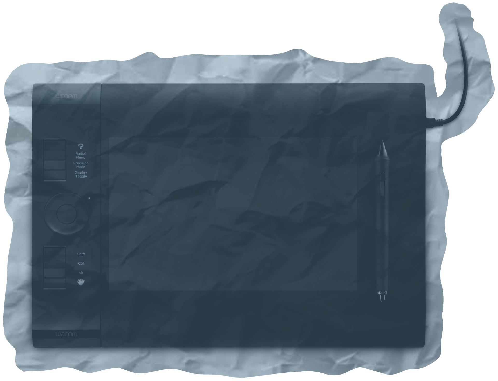
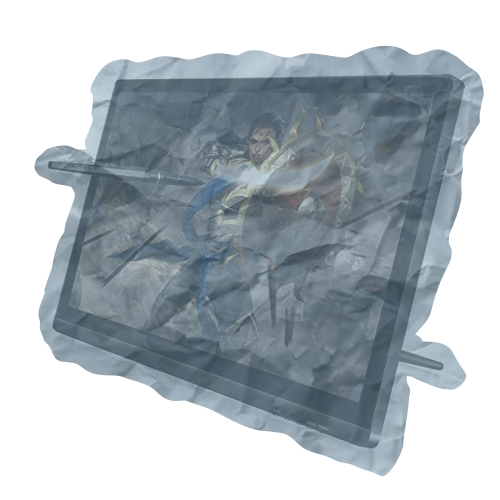

Traditional Art Materials

Watercolor Pan
This is just a simple water color pan I bought from Hobby Lobby. It is cheap and works really well. Watercolors are my favorite medium, as I find it intuitive to layer colors to make interesting textures.
Depending on how I feel, I may upgrade this to the Windsor and Newton version, as I feel like that would be a greater investment in the long run given the better paints and the fact that you can easily refill the pan with Windsor and Newston's watercolor tubes.
Ink Wells
As you likely guessed due to my love for watercolors, I have a love for inks as well! I primarily uilize inks for lining, however recently I began to utilize them to create pull pieces and have been having an absolute blast.
I currently have 4 types of ink at the moment: a simple black ink (from some random company), a blue ink, a white ink, and a red ink (all from Speedball). While the random black ink I found has certainly served me well and I would reccomend it as a good budget option, I'm afraid that nothing can beat the astounding* quality of Speedball inks.
*Disclaimer: I am not an expert of inks, please do not take my advice as gospel


Wacom Intuos 4
This drawing tablet was my first foray into digital art. I have had this tablet for around 8 or so years and it has never failed me. It is a fantastic little device and I plan to use it until it decides to break (or when the drivers stop working all together).
Huion GT 191
This is one of my most prized possesions. It still works incredibly well and can still produce amazing things. Even as a monitor it is still effective. It will be around 10 years old next year, so to celebrate I should probably get it a working pen...
